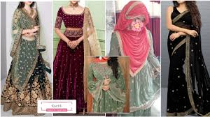

Kachli
Kachli is similar to a choli or a blouse. It is longer when compared to a blouse. The setup of the kachli involves the upper end being tucked on the side of the chest. Kachli is paired with a long flared skirt or ghagra. It gives a beautiful and royal look when worn with the right combination.